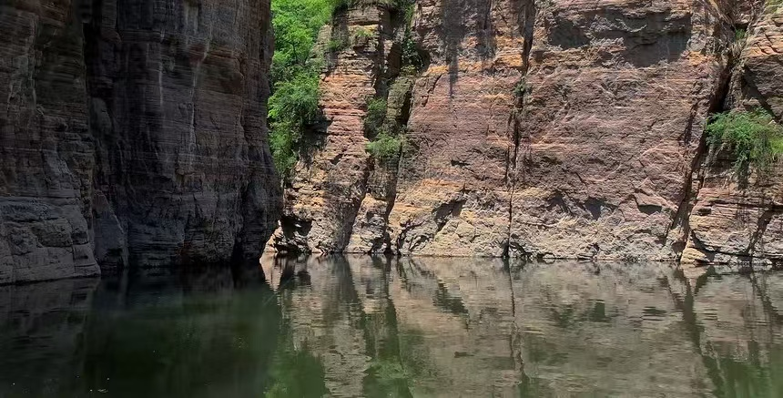

🌊 龙潭大峡谷旅游攻略
国家5A级景区 · 峡谷奇观 · 古海洋地质博物馆 · 山水画廊

景区介绍
龙潭大峡谷位于河南省洛阳市新安县石井镇，是国家5A级旅游景区、国家地质公园，属于紫红色石英砂岩经亿万年流水侵蚀形成的峡谷地貌，被誉为“中国嶂谷第一峡”“古海洋天然博物馆”。
景区全长12公里，峡谷内潭瀑相连、怪石林立、壁立万仞，集幽、奇、险、秀、幽于一体，地质景观奇特，自然风光绝美，是休闲徒步、避暑观光、研学探秘的绝佳去处。
核心景点

- 五龙潭：碧绿深潭，四周绝壁环绕，是峡谷核心水景
- 一线天：峡谷狭窄处，两侧石壁高耸，仅容一人通过
- 通天瀑：落差数十米的瀑布，飞流直下，气势恢宏
- 青龙峡：幽深狭长，溪水潺潺，移步换景
- 罗汉崖：岩壁造型奇特，形似罗汉列队，地质奇观
- 蝴蝶泉：泉水清澈，春夏时节蝴蝶纷飞，景致浪漫
- 石龛观音：天然形成的岩壁石像，栩栩如生
实用攻略
📍 地址：河南省洛阳市新安县石井镇龙潭大峡谷
🎫 门票：成人票80元，学生凭学生证半价，1.4米以下儿童、60岁以上老人免票
⏰ 开放时间
旺季（3月-11月）07:30-18:00
淡季（12月-2月）08:00-17:00
🚗 交通指南
- 自驾：洛阳城区导航直达，约1.5小时车程，景区有大型停车场
- 公共交通：洛阳汽车站乘坐新安大巴，转乘景区专线班车
- 跟团出行：可报洛阳本地一日游团，省心便捷
🍜 当地特色美食
- 新安烫面角、糊涂面、浆面条、农家炒土鸡
- 山野菜、橡子凉粉、玉米糁汤、手工馒头
推荐游览路线
景区入口→五龙潭→青龙峡→一线天→通天瀑→罗汉崖→蝴蝶泉→石龛观音→景区出口，全程徒步约3-4小时，路线平缓，老少皆宜。
全程沿溪水前行，无需攀爬陡峭台阶，轻松休闲，可边走边拍照，沉浸式感受峡谷风光。
游玩小贴士
1. 峡谷内阴凉湿润，夏季也建议备一件薄外套。
2. 溪边路面湿滑，务必穿防滑运动鞋，小心行走。
3. 景区内溪水清澈，禁止下水嬉戏，注意安全。
4. 徒步路程较长，可自带饮用水和小零食补充体力。
5. 拍照时远离崖边，遵守景区安全警示标识。
6. 节假日游客较多，建议早间入园，错峰游览。
最佳旅游季节
春季（4-5月）：山花盛开，溪水潺潺，气候宜人；夏季（6-8月）：峡谷内凉爽舒适，是避暑玩水好去处；秋季（9-11月）：红叶满山，岩壁色彩斑斓，拍照出片；冬季气温较低，峡谷静谧，别有一番景致。